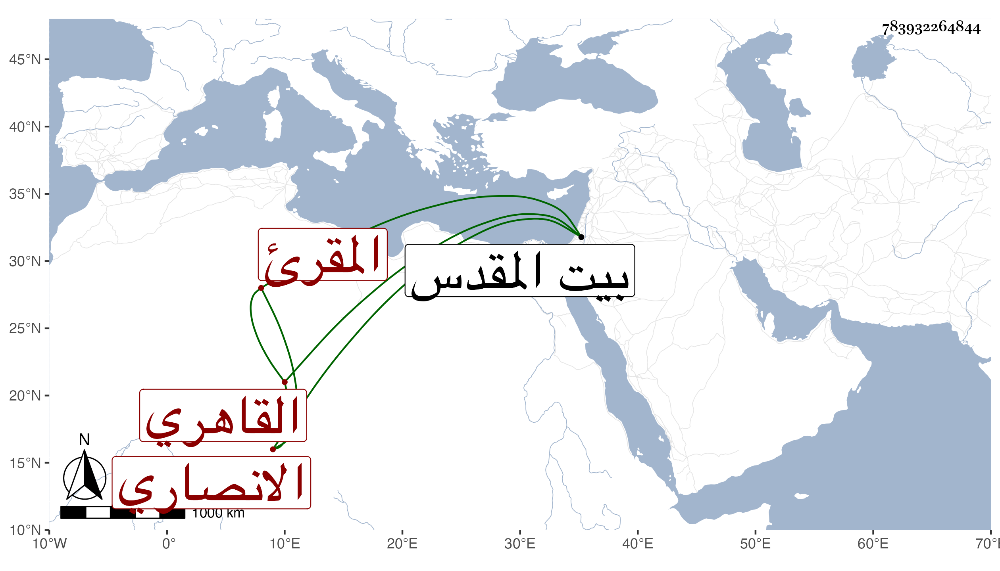

0902Sakhawi.DawLamic.ITO20230111-ara1.EIS1600.783932264844
Biography ID: 783932264844
188
محمد بن محمد بن حامد بن محمود بن سليمان الشمس الانصاري القاهري المقرئ شقيق عبد الغني بن القصاص الماضي وذاك الأكبر . ولد سنة ثلاثين وثمانمائة وحفظ القرآن وجوده على أخيه بل قرأ لابي عمرو على ابن عياش حين حج مع أخيه وزار القدس ، وتكسب بالشهادة ثم تركها مع الخير والانجماع والحضور للدروس أحيانا وللملازمة للقراءة بمشهد الليث وربما بره أخوه .
